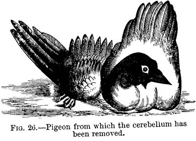

Tuesday, October the 7th, 2008
back to: title, date or indexes
It is imperative that I draw your attention to the latest post on the splendid blog According To The Ninth, “the world as seen through the clarifying lens of the 9th Edition of the Encyclopaedia Britannica (1875–1889)”. As you can gather from the illustration, the topic is fiendish experiments upon the brains of birds. Well, upon the brains of pigeons, to be specific. You may chuckle, or you may vomit, but you will almost certainly learn something you did not know before.
